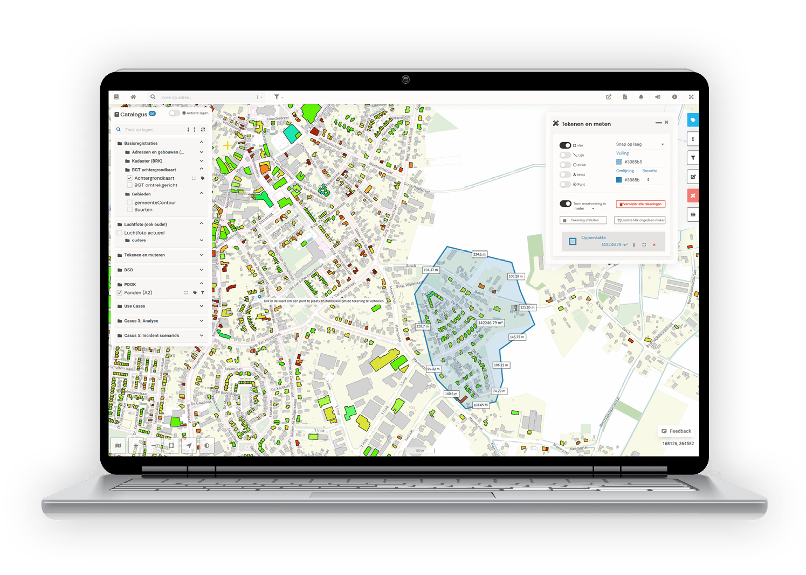

LiDAR management interface
Elinext built two web modules for setting up and managing LiDAR systems in six weeks.
Read the caseWhy we're here: GeoSquare is hiring a Software Engineer while bringing Geo Solutions and Localyse into one Belgium brand. That points to more product work across KaartViewer, APIs, field apps, and data tools.

The Software Engineer role says you are scaling delivery across client work and product work. The hard part is not one missing skill. KaartViewer touches map UI, API links, DataPortaal, reports, field work, and GIS data. GeoSquare Belgium also just moved Geo Solutions and Localyse into one brand. If the team is stretched, new features and client changes can slow each other down.
KaartViewer connects WMS, WFS, OGC APIs, REST APIs, FME Flow, and Python. Map one real client flow first, then add automated checks at each data handoff.
Your product page names data silos, slow processes, route optimisation, and address validation. Turn one repeatable integration into a delivery template before more backlog lands.
Start with a six-week pilot. Keep scope small, demos weekly, and handover clean.
Choose one KaartViewer or DataPortaal workflow with API links, permissions, and a clear client outcome.
Review imports, map layers, reports, and REST calls so defects are found before client review.
Build browser and API checks for the key GIS flows your team repeats across sectors.
Document the template, hand it to your team, and extend only after the pilot proves fit.
Elinext is a full-cycle software development company, active since 1997, with about 700 in-house specialists and no freelancers. For GeoSquare, the fit is senior web, backend, QA, DevOps, and data work under your own lead. Elinext holds ISO 9001 and ISO 27001. Teams have served Siemens, Broadcom, Volkswagen, TRUMPF, and TUI. That mix fits a small, controlled squad for GIS product delivery.
Elinext built two web modules for setting up and managing LiDAR systems in six weeks.
Read the case
A Java, React, and PostgreSQL team helped plan fiber networks on a map.
Read the case